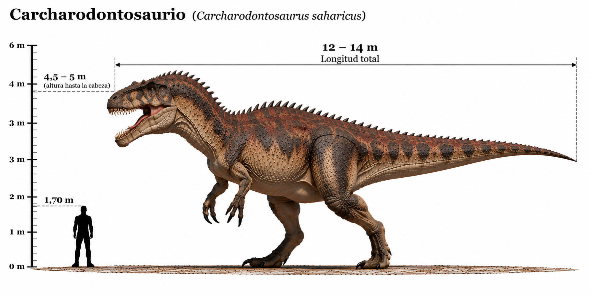

Carcharodontosaurus saharicus

El Carcharodontosaurus saharicus fue uno de los mayores dinosaurios terópodos carnívoros conocidos. Habitó el norte de África durante el Cretácico tardío temprano, hace aproximadamente entre 100 y 94 millones de años. Su nombre significa "lagarto de dientes de tiburón", debido a la semejanza de sus dientes afilados y aserrados con los del tiburón blanco. Poseía un cráneo enorme y alargado, poderosas patas traseras y brazos relativamente pequeños provistos de tres dedos con garras. Fue uno de los principales depredadores de los ecosistemas del norte de África, donde convivió con grandes saurópodos y otros dinosaurios carnívoros, como Spinosaurus. Sus dientes estaban especialmente adaptados para cortar carne, a diferencia de los del Tyrannosaurus rex, que eran más robustos y podían soportar fuerzas elevadas al morder huesos.
- Grupo: Terópodo.
- Familia: Carcharodontosauridae (carcarodontosáuridos).
- Período: Cretácico tardío (hace aproximadamente 100–94 millones de años).
- Alimentación: Carnívoro.
- Longitud: Aproximadamente 12–13 metros.
- Altura: Aproximadamente 3,5–4 metros hasta la cadera.
- Localización: Norte de África (actuales Marruecos, Argelia y Egipto).
